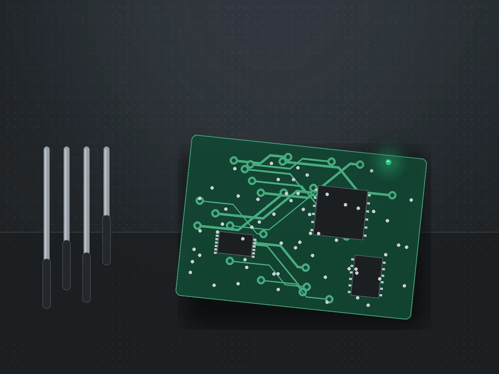
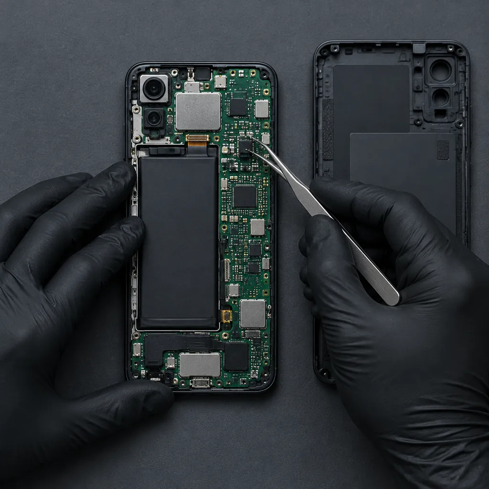
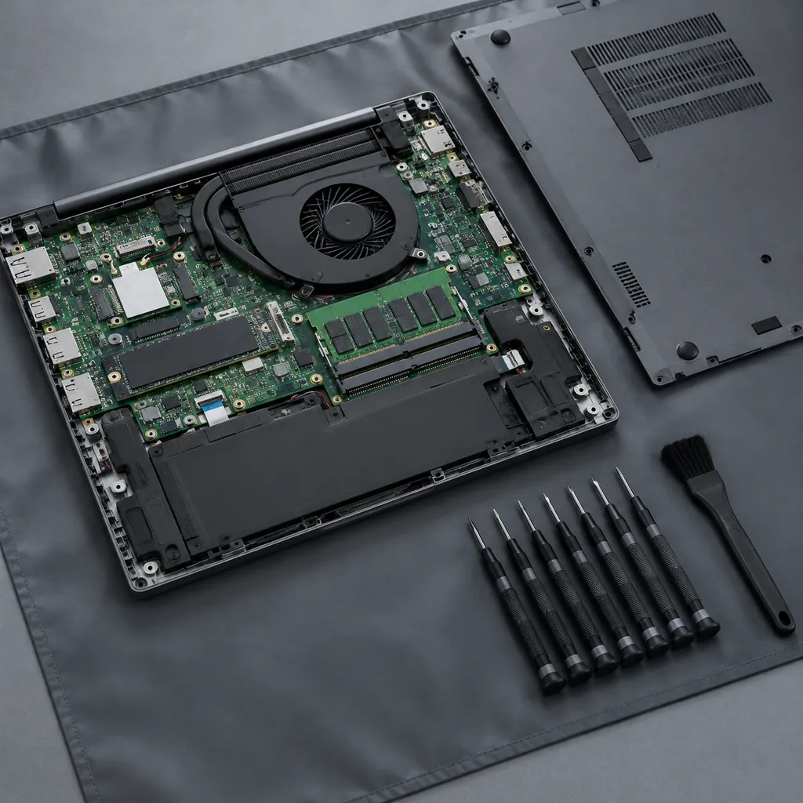
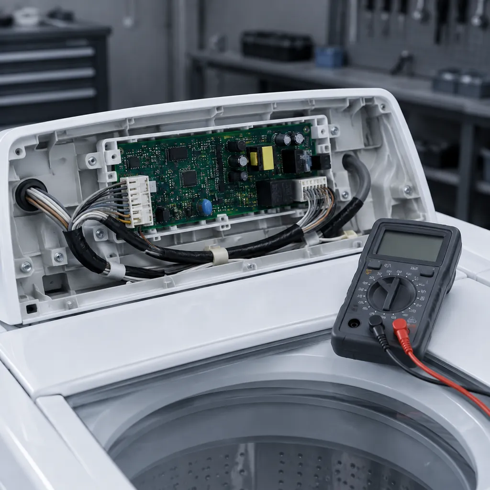
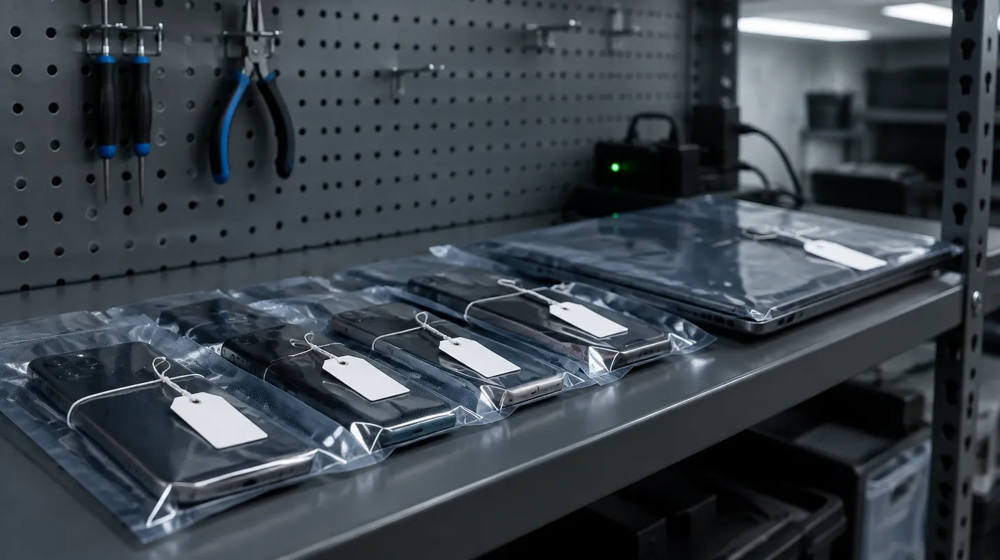
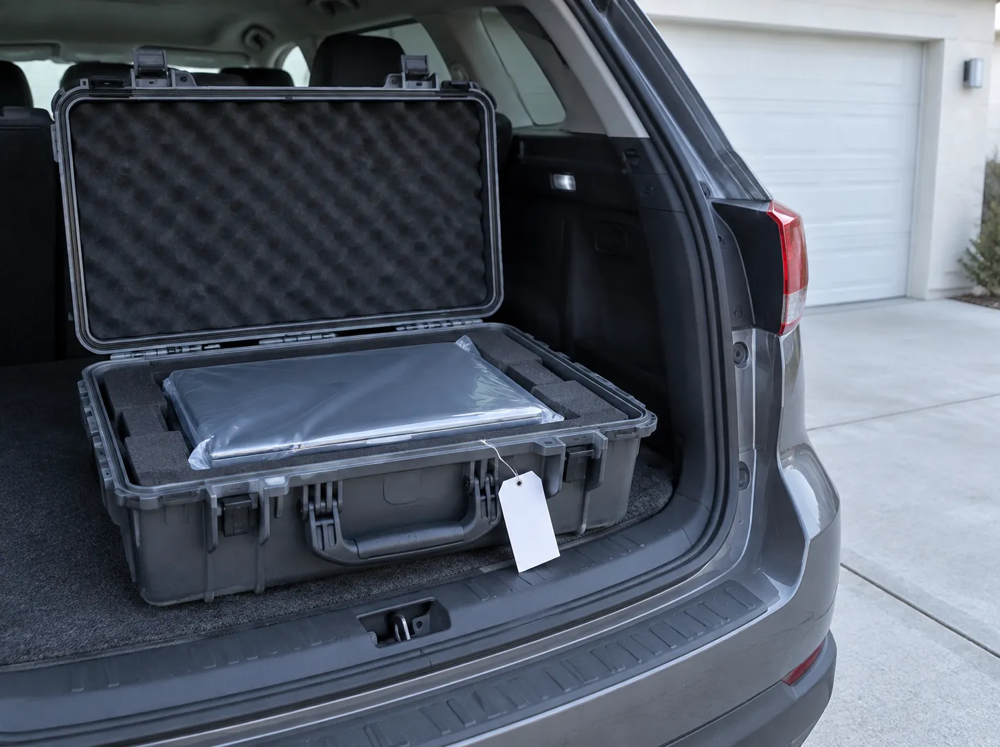
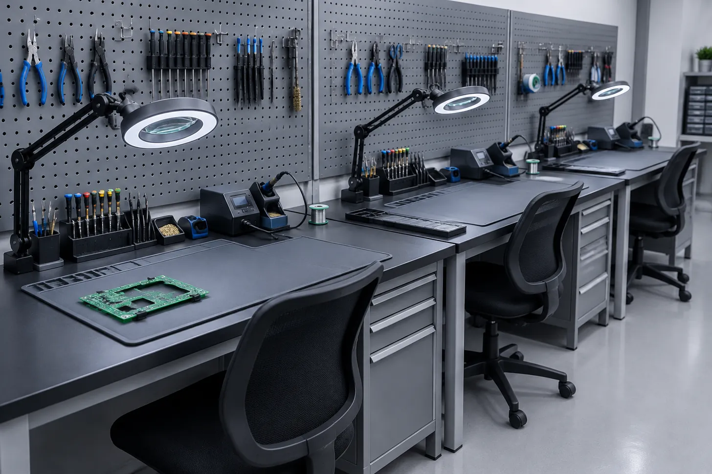

Seu aparelho quebrou. A gente diz o que é, quanto custa e quando fica pronto.
Consertamos celulares, notebooks e eletrodomésticos em Cuiabá. Diagnóstico em até 24 horas, orçamento aprovado por você antes de qualquer reparo e cada etapa registrada na sua ordem de serviço.
Bancada aberta · seg a sáb
- horas para o diagnóstico
- 24
- dias de garantia no reparo
- 90
- dos aparelhos prontos em 5 dias
- 82%

OS 48213 · pronto
serviços
O que consertamos
Três bancadas, três especialidades. Se o seu aparelho não está na lista, pergunte: boa parte do que chega aqui a gente resolve ou indica quem resolve.
-

Celulares e tablets
Tela, bateria, conector de carga, câmera, alto-falante, placa com problema de carregamento ou que não liga. Trabalhamos com peças originais ou de primeira linha, e dizemos qual é qual no orçamento.
- Tela quebrada
- Bateria viciada
- Não carrega
- Não liga
- Molhou
Prazo típico 1 a 3 dias
Troca de tela no mesmo dia -

Notebooks e computadores
Formatação com backup dos seus arquivos, troca de SSD e memória, teclado, tela, dobradiça, limpeza interna com troca de pasta térmica e reparo de placa-mãe em bancada própria.
- Lento
- Esquenta e desliga
- Tela ou dobradiça
- Não liga
- Teclado
Prazo típico 2 a 5 dias
Formatação em 24 horas -

Eletrodomésticos
Máquina de lavar, geladeira, micro-ondas, fogão com acendimento elétrico e TV. Visita técnica em Cuiabá e Várzea Grande ou retirada e entrega do aparelho na sua casa.
- Não centrifuga
- Não gela
- Não esquenta
- Barulho
- Sem imagem
Prazo típico 3 a 7 dias
Depende da peça
ordem de serviço
Acompanhe a sua ordem de serviço
Digite o número que está na etiqueta do comprovante. Você vê em que etapa o conserto está, a previsão de entrega e o que o técnico anotou.

Aparelho
Defeito relatado
BK-00000 · recebido
- Cliente
- A. S.
- Entrada
- 00/00
- Previsão
- 00/00
- Técnico
- Nome
orçamento
Estime o orçamento antes de sair de casa
Escolha o aparelho e o defeito. Mostramos a faixa de preço que costumamos cobrar e o prazo. O valor fechado sai depois do diagnóstico, e você só paga se aprovar.
retirada e entrega
Retirada e entrega em casa
Buscamos o aparelho na sua casa ou trabalho, em Cuiabá e Várzea Grande, e devolvemos pronto. Escolha o dia e a janela de horário; o resto a gente combina por telefone.

dúvidas
Dúvidas frequentes
Digite uma palavra, como "garantia", "backup" ou "molhou", e a lista filtra na hora.
Quanto custa o diagnóstico?
Se você aprovar o conserto, nada: o diagnóstico está incluído. Se não aprovar, cobramos a taxa de bancada, que é R$ 40 para celulares e notebooks e R$ 80 para eletrodomésticos com visita. O valor aparece no comprovante antes de você deixar o aparelho.
Qual é a garantia do reparo?
90 dias para peça e mão de obra, contados da data da retirada. A garantia cobre o defeito consertado. Não cobre queda, líquido ou abertura por terceiros depois da entrega. O número da OS é o seu comprovante de garantia.
Vocês fazem backup antes de formatar?
Sim, sempre que o disco permitir leitura. Copiamos documentos, fotos, área de trabalho e downloads para um disco da oficina, formatamos e devolvemos tudo no lugar. Se o disco estiver com defeito físico, avisamos antes e você decide se tentamos recuperação.
Meu celular molhou. O que faço agora?
Desligue e não tente carregar. Não coloque no arroz, isso não ajuda e pode entrar poeira. Traga o quanto antes: quanto menos tempo a placa fica úmida, maior a chance. Fazemos limpeza da placa em banho ultrassônico e só depois dizemos o que precisa trocar.
A peça é original?
No orçamento aparecem as opções: original, quando existe no mercado, ou de primeira linha, com a diferença de preço e a diferença prática explicada. Você escolhe. Em bateria e tela isso muda bastante a conta; em conector e alto-falante quase nada.
Quanto tempo demora?
Troca de tela ou bateria de celular costuma ficar pronta no mesmo dia. Formatação com backup, 24 horas. Reparo de placa, 3 a 5 dias. Eletrodoméstico que depende de peça, 3 a 7 dias. A previsão exata fica na sua OS e muda se a peça atrasar; nesse caso a etapa "aguardando peça" aparece com a nova data.
Vocês buscam e entregam em casa?
Sim, em Cuiabá e Várzea Grande, de segunda a sábado. A retirada custa R$ 25 e a entrega mais R$ 25; em reparo acima de R$ 400 as duas são gratuitas. Para eletrodoméstico grande, a visita técnica vai até você.
Como acompanho o conserto?
Pelo número da OS, aqui na seção "Acompanhe a sua ordem de serviço". A cada etapa o técnico registra uma nota curta. Você também recebe mensagem quando o orçamento fica pronto e quando o aparelho está liberado.
E se o conserto não compensar?
A gente fala. Se o reparo passar de 60% do valor de um aparelho equivalente novo, o técnico escreve isso no diagnóstico e você decide. Não insistimos em consertar o que não vale a pena.
Formas de pagamento
Pix, dinheiro, débito e crédito em até 3 vezes sem juros acima de R$ 300. O pagamento é na retirada, depois de você testar o aparelho na bancada com o técnico.
Nenhuma dúvida com essa palavra. Tente outra, como "prazo" ou "pagamento", ou pergunte ao agendar a retirada.
oficina
A oficina
Três técnicos, uma bancada para cada especialidade, estoque das peças mais trocadas e um sistema de OS que o cliente consulta. É isso. Sem balcão de vendas, sem acessório pendurado.

- anos de bancada
- 11
- ordens de serviço por mês
- 340
- voltam na garantia
- 2,1%
- menos de 3%
- técnicos certificados
- 3
- Endereço (fictício)
- Rua das Bancadas, 1024, sala 3 · Jardim das Américas · Cuiabá, MT
- Horário
- seg a sex 08:00 às 18:00 · sáb 08:00 às 12:00
- Telefone e WhatsApp (fictícios)
- (65) 90000-0000
- Responsável técnico
- Marcos Tavares, técnico em eletrônica (nome fictício)
como funciona
Como este site funciona
Esta página é uma demonstração da Mil e Uma Linhas! para mostrar a uma assistência técnica o que um site dela pode fazer. Tudo aqui é inventado, inclusive a oficina.
Para quem só quer usar
Você digita o número da OS e vê o andamento do conserto. Escolhe aparelho e defeito e vê quanto deve custar. Marca dia e hora para a retirada em casa. Procura uma dúvida e ela aparece. Nada é enviado a lugar nenhum: é tudo exemplo.
Como funciona por dentro
O site é uma página só, que o seu navegador baixa inteira. As quatro ordens de serviço de exemplo, a tabela de preços e as dúvidas estão escritas dentro do próprio site. Quando você consulta ou calcula, é o navegador que faz a conta, na hora, sem falar com nenhum servidor.
- A consulta de OS procura o código numa lista fixa de exemplos.
- O orçamento multiplica uma faixa base pelo porte do aparelho e pela urgência.
- O agendamento monta um resumo na tela e para por aí.
- Só o "lembrar número da OS", se você marcar, grava algo no seu navegador.
Numa oficina de verdade
A consulta de OS puxaria do sistema interno da oficina, o orçamento usaria a tabela de peças atualizada e o agendamento avisaria o técnico por WhatsApp ou e-mail. O desenho da página fica igual; muda só de onde vêm os dados.
Detalhes técnicos
HTML, CSS e JavaScript puros, sem framework, sem CDN e sem analytics. Um arquivo css/estilo.css e um js/site.js, carregados pelo próprio domínio.
Content-Security-Policy por meta: default-src 'self'; script-src 'self'; style-src 'self'; img-src 'self' data:; connect-src 'none'; form-action 'none'. Nenhum script inline, nenhum estilo inline, nenhum fetch. Os formulários têm novalidate e preventDefault; não existe action.
Fontes locais em fonts/ (Barlow e JetBrains Mono, licença SIL OFL 1.1, subconjunto latino em woff2). As fotos em img/ são webp locais gerados por IA no Canva, ilustrativos.
Os dados de exemplo (OS, tabela de preços, janelas indisponíveis) são constantes em js/site.js. O estado da interface é guardado em atributos aria-pressed, hidden e classes; a barra de progresso da OS usa classes p1 a p5 para não precisar de estilo inline.
Único uso de localStorage: a chave bancada-os, com o último código consultado, só quando a caixa "lembrar" está marcada. Desmarcar apaga a chave. O acesso fica em try/catch para navegadores que bloqueiam armazenamento.
Acessibilidade: lang="pt-BR", link para pular ao conteúdo, foco visível, botões de verdade para dias e janelas (com aria-pressed), regiões aria-live para os resultados, contraste AA em todos os pares de cor e prefers-reduced-motion respeitado.
Testes: tests/site.cjs com Playwright em 1280x900, iPhone 13 e 320px, verificando console limpo, ausência de rolagem horizontal, textos não cortados e cada função de ponta a ponta.